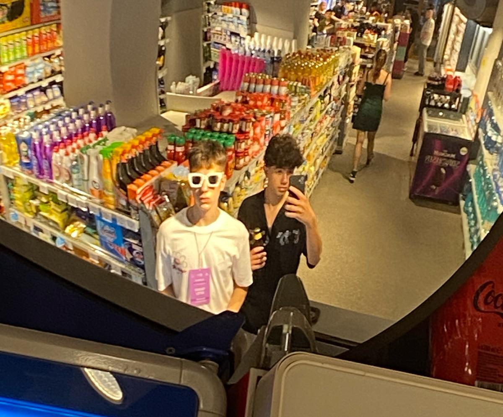

În micul oraș de provincie Râmnicu Vâlcea, pe străzile sale pline de viață, doi adolescenți plini de energie și pasiune, Simeon și Ilie, și-au pus în minte să își facă propriul drum în lumea afacerilor. Fiind în clasa a 9-a și fiind amândoi iubitori de înghețată, au hotărât că își vor uni forțele pentru a crea ceva cu adevărat special.
Cu un entuziasm molipsitor, Simeon și Ilie au început să facă cercetări și să planifice. Cu toate că mulți ar fi privit sceptici la visul lor, cei doi prieteni și-au păstrat încrederea și hotărârea de a face ceva mare.
Cu puținii bani economisiți și multă muncă în plus față de școala lor, Simeon și Ilie și-au transformat garajul într-un mic laborator de producție a înghețatei. Încercau diferite rețete, folosind ingrediente proaspete și locale, pentru a crea cel mai delicios sortiment de înghețată pe care l-ar fi putut imagina cineva.
Pe măsură ce aroma înghețatei lor se răspândea în oraș, oamenii au început să vină în număr tot mai mare pentru a gusta minunăția pe care o făceau cei doi tineri antreprenori. Cu fiecare clienții satisfăcut, încrederea lor în sine și în visul lor de a avea propria afacere a crescut.
Nu le-a luat mult timp să realizeze că au nevoie de un spațiu mai mare pentru a satisface cererea în creștere a înghețatei lor. Astfel, au decis să închirieze un mic chioșc în centrul orașului, transformându-l în propriul lor magazin de înghețată.
Cu fiecare zi care trecea, Simeon și Ilie deveneau tot mai cunoscuți și mai apreciați în comunitatea lor. Oamenii îi susțineau, venind mereu să le cumpere înghețata și să îi încurajeze în aventura lor antreprenorială.
În cele din urmă, afacerea lor de înghețată a devenit o parte integrantă a vieții din Râmnicu Vâlcea. Cu munca lor asiduă și pasiunea lor pentru înghețată, Simeon și Ilie au demonstrat că visele pot deveni realitate, chiar și pentru doi adolescenți dintr-un mic oraș de provincie.